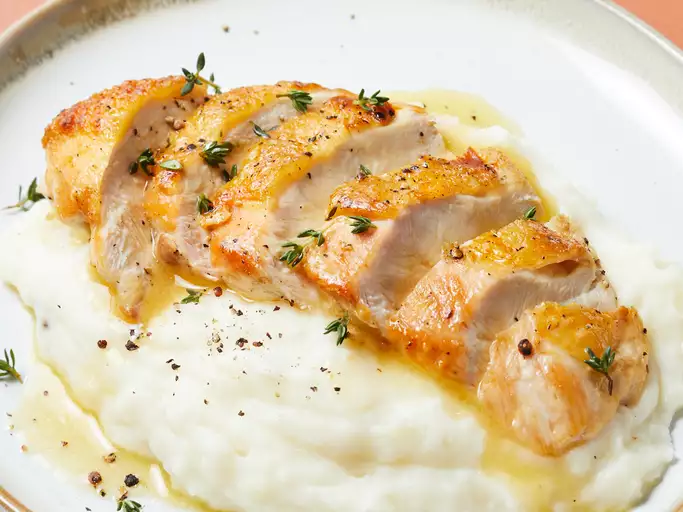

Pan-Roasted Chicken Breasts

Ingredients
- 4 boneless chicken breast halves with skin
- salt and freshly ground black pepper to taste
- 2 tablespoons olive oil
- 1 tablespoon chopped fresh herbs (thyme, parsley, rosemary) (Optional)
- ¼ cup apple cider vinegar
- 4 tablespoons cold butter, cut into small pieces
- 1 tablespoon chicken broth (or water), if needed to thin sauce
Steps
- Gather all ingredients.
- Season chicken on both sides with salt and pepper.
- Heat olive oil in a heavy skillet over medium-high heat until it starts to shimmer. Place chicken breasts skin-side down in the skillet. Sprinkle with fresh herbs. Cook until the bottoms are well seared and golden brown, 5 to 6 minutes.
- Flip chicken breasts over and continue cooking until an instant-read thermometer inserted into the center of a breast reads 150 degrees F (66 degrees C), about 5 minutes.
- Add vinegar and cold butter to the pan with chicken. Shake the pan gently until butter melts and the internal temperature of chicken reads at least 165 degrees F (74 degrees C), 2 to 3 minutes more.
- Stir in 1 tablespoon chicken broth to thin sauce.